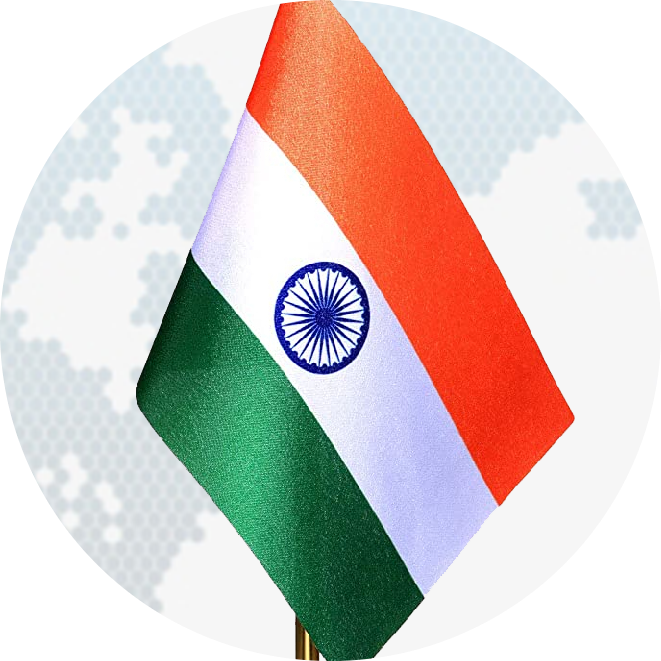

The IndoPolitics

Geopolitics from an Indian perspective
This is a website where you can get all the events happening around the world that concerns India!
Important Wars fought
1947 - First Kashmir war
1962 - The Sino - Indian War
1965 - Second Kashmir War
1971 - Bangladesh Liberation War
1999 - Kargil War
Other Important Geopolitical events
World War 2
1947 - Independence and Partition
Occupation of Tibet by Mao Zedong's China
Accesion of Trans-Karakoram tract to China by Pakistan
People's Republic of China replaces Republic of China (Taiwan) in China's seat in the United Nations.
Sikkim's Accesion to India
Nuclear tests by China, India and Pakistan
Fall of USSR
About Me